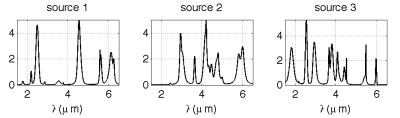
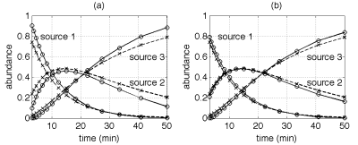
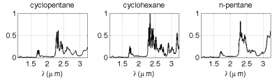
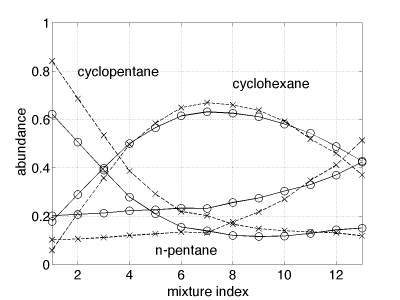

Spectrochemical analysis
We address the problem of spectral unmixing when positivity and additivity constraints are imposed on the mixing coefficients. A hierarchical Bayesian model is introduced to satisfy these two constraints. A Gibbs sampler is then proposed to generate samples distributed according to the posterior distribution of the unknown parameters associated to this Bayesian model. Simulation results conducted with synthetic data illustrate the performance of the proposed algorithm. The accuracy of this approach is also illustrated by unmixing spectra resulting from a multicomponent chemical mixture analysis by infrared spectroscopy.
The spectral source separation procedure and the main results are detailed in the papers presented at the IEEE Workshop SSP 2007 and published in Signal Processing (EURASIP), respectively:
The MATLAB codes are available online:
- matlab codes
 [ .zip - 52Ko ].
[ .zip - 52Ko ].
Synthetic data
Simulation results conducted with synthetic data illustrate the performance of the
proposed algorithm. The spectral sources used in the mixtures are
simulated to get observed signals similar to real spectrometric data.
Each spectrum is obtained as a superposition of Gaussian and Lorentzian
shapes with different and randomly chosen parameters (location,
amplitude and width). The mixing coefficients are also chosen to get
evolution profiles similar to kinetic reactions. Figure 1 shows an
example of M=3 source signals of L=1000 spectral bands. The abundance
evolution profiles are simulated for N = 15 observation times. An
i.i.d. Gaussian sequence
is added to each observation to obtain a signal to noise ratio (SNR)
equal to 20dB in each mixture.

Fig. 1. Example of simulated spectral sources.
Figure 2 summarizes the
result of 100 Monte Carlo runs for which the mixing matrix is kept
unchanged while new sources and noise sequences are generated at each
simulation. Figure 2-a shows a comparison between the true
concentrations and their minimum mean square error (MMSE) estimates.
The proposed Bayesian model has also been implemented with exponential
priors for the spectral sources . The results obtained with such priors
are shown in Figure 2-b. It can be firstly noticed that the estimated
mixing coefficients satisfy positivity and additivity constraints,
whatever the source prior. Moreover, an improvement in the abundance
estimation accuracy is noted when using an exponential source prior.

Fig. 2. Simulated (cross) and estimated (circles) mixing coefficients with positive Gaussian (a) and exponential (b) priors on the sources.
Real data
To validate the algorithm with real data, an experiment has been performed on mixture data obtained from near infrared (NIR) spectroscopy measurements. Three known chemical species (cyclopentane, cyclohexane and n-pentane) are mixed experimentally with monitored concentrations. These species have been chosen for two main reasons: their available spectra in the NIR frequency bands are highly overlapping. In addition, as these species are inert solvents, they do not interact when they are mixed, which ensures that no new component appears. Figure 3 shows the pure spectra of the chemical species.

Fig. 1. Measured pure spectra of the mixed alcanes.
The results of estimation are reported in Fig. 4. It can be noticed that the abundance fraction profiles are estimated correctly, while a small difference between the actual abundances and the estimated ones can be noted. This is explained by the baseline that can be observed in the actual spectra in the spectral domain ranging from 2.4μm to 3.5μm.

Fig. 2. True (cross) and estimated (circles) mixing coefficients using exponential priors on the sources.